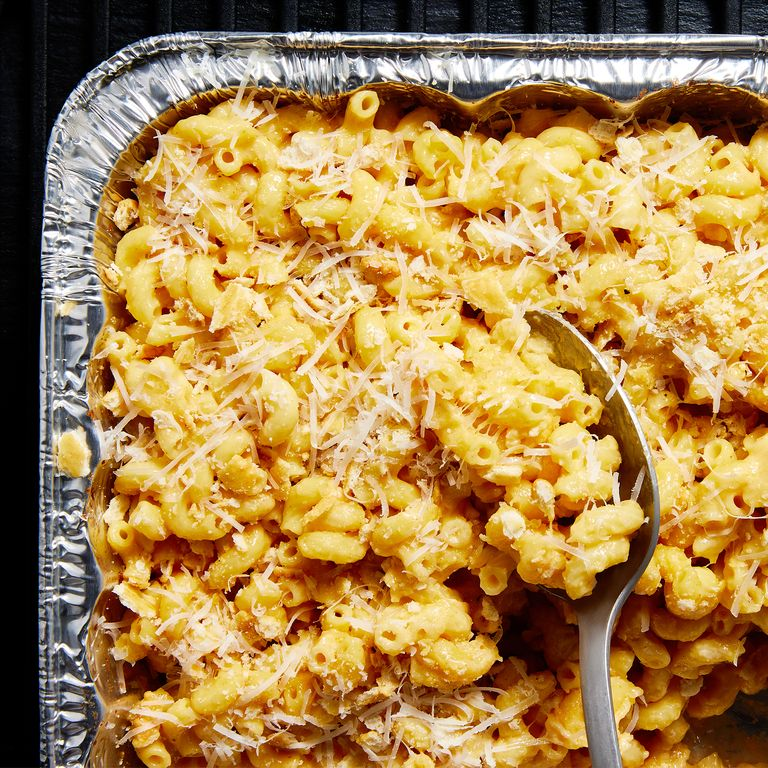

Campfire Mac & Cheese

Description
On a camping trip, the classics are usually in order: s'mores, hot dogs, and baked beans. But, when we're really looking to take our trip up a notch, this campfire mac & cheese is our go-to recipe. This campfire mac & cheese is not only extra-cheesy, but loaded with crushed Ritz crackers and shredded Parmesan cheese. It's the perfect side to add to your dinner round the fire, but don't be surprised if it takes the center stage.
Ingredients
- 1 (16-oz.) box elbow pasta
- Kosher salt
- 1 (12-oz.) can evaporated milk
- 1/2 c. (1 stick) melted butter
- 1 tsp. ground mustard
- 1/4 tsp. cayenne pepper
- Freshly ground black pepper
- 2 c. shredded yellow cheddar
- 2 c. shredded white cheddar
- 1/2 c. crushed Ritz crackers
- 1/2 c. freshly grated Parmesan
Steps
- In a large pot of boiling salted water, cook pasta according to package directions. Drain.
- In a large aluminum pan, combine cooked pasta, evaporated milk, melted butter, ground mustard, cayenne, and black pepper. Add cheddars and stir to combine. Cover with foil and cook over a campfire until cheese is melty, 15 minutes.
- Stir mac and cheese, then top with crushed crackers and Parmesan.